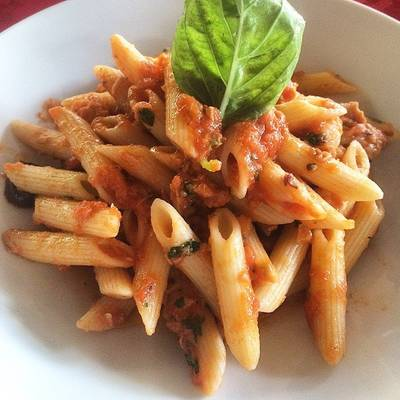

Pasta al pomodoro:Te ofrecemos una receta italiana muy popular y tradicional, en concreto te proporcionamos la receta casera de una deliciosa pasta al pomodoro, un verdadero platillo italiano auténtico, lleno de sabor por las diferentes especias que se utilizan. Además, no debes dejar de lado la albahaca, el ingrediente estrella que le da un sabor especial. Es una receta perfecta para preparar para cenar o como primera entrada de un platillo fuerte.
